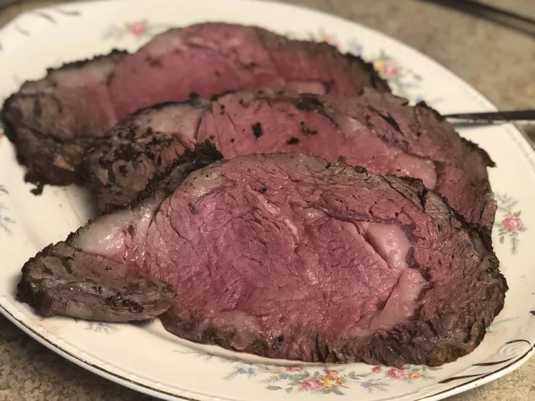

Prime Rib

Description
Prime rib is an extremely tender, unbelievably juicy cut of beef with a bold flavor that needs no dressing up.
Ingredients
- 4lb Prime Rib
- 1/4 Cup Unsalted Butter
- 1 Tablespoon Herbes de Provence
Steps
- Bring the rib toast to room temperature.
- Preheat oven.
- Season.
Back to Main